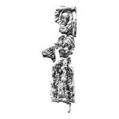

Catalog › CE-0956 · KOR2003-II.4.3.9
Fragmente: valvă de față (capătul de jos cu picioare) și valvă de revers în cinci fragmente, cu Agiosoritissa
sec. prima jumătate XIII (1201–1250) · Toropeț, regiunea Tver, Rusia · Ermitajul de Stat (GE), Sankt Petersburg, secția de istorie a culturii ruse (OIRK)
single valve of a reliquary cross, aramă; c. prima jumătate XIII (1201–1250); found at Toropeț, regiunea Tver, Rusia; kept at Ermitajul de Stat (GE), Sankt Petersburg, secția de istorie a culturii ruse (OIRK).


Identificare
- Categorie
- Valvă izolată
- Material
- Aramă
- Tehnică
- Turnare în relief
- Stare
- Fragmentară
- Dimensiuni
- Î 64 × L 40 mm
Iconografie
- Descriere avers
- Fragment al valvei de față (capătul de jos cu imaginea picioarelor în trepte).
- Revers
- Neidentificat
- Descriere revers
- Valvă de revers fragmentară (5 fragmente), cu imaginea Maicii Domnului Agiosoritissa și a unui sfânt pe capătul de sus; nu se știe dacă pe capetele laterale se aflau relief sau inscripții. Reliefuri joase.
Datare și atribuire
- Datare
- sec. prima jumătate XIII (1201–1250)
- Centru
- Necunoscut
- Tipologie
- Korzukhina–Peskova 2003, tip II 4 3
Descoperire
- Localitate
- Toropeț
- Regiune
- regiunea Tver
- Țară
- Rusia
- Context
- Fortificație
- Anul
- 1960
Păstrare și referințe
- Colecție
- Ermitajul de Stat (GE), Sankt Petersburg, secția de istorie a culturii ruse (OIRK)
- Bibliografie
- G. F. Korzukhina, A. A. Peskova, Древнерусские энколпионы. Нагрудные кресты-реликварии XI–XIII вв., Sankt-Petersburg, 2003 [Korzukhina–Peskova 2003], p. 99, cat. nr. II 4 3/9, reprodusă la Табл. 46 (planșe, p. 288). Bibliografie citată în sursă: Малевская, Корзухина 1960, 23–24; Малевская, Фоняков 1991, 53; Малевская, Фоняков 2000, рис. 71, 1.
- Figura
- Табл. 46
- Planșe
- Korzukhina–Peskova 2003, Табл. 46 (planșă fără paginație proprie în PDF; p. 288 tipărită)
- Observații
- Datare după Peskova: sec. prima jumătate XIII. Circumstanțe: Săpături G. F. Korzuhina și M. V. Malevskaia, 1960, pe Mica Gorodișce, orizontul de construcții 2 – anii 50–70 ai sec. XIII. Dimensiuni: fragment păstrat al traversei. Valva de față și cea de revers sunt fragmentare; se păstrează doar fragmentul traversei. Coordonate: nu sunt date în sursă.
Citare: Corpus Encolpiorum, CE-0956, Fragmente: valvă de față (capătul de jos cu picioare) și valvă de revers în cinci fragmente, cu Agiosoritissa, --root/piese/KOR2003-II.4.3.9/ (accesat 2026-10-17).